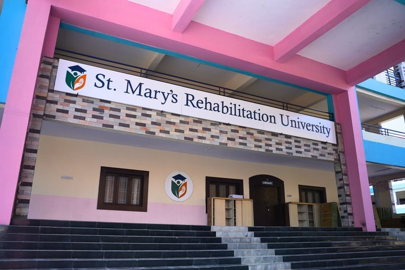
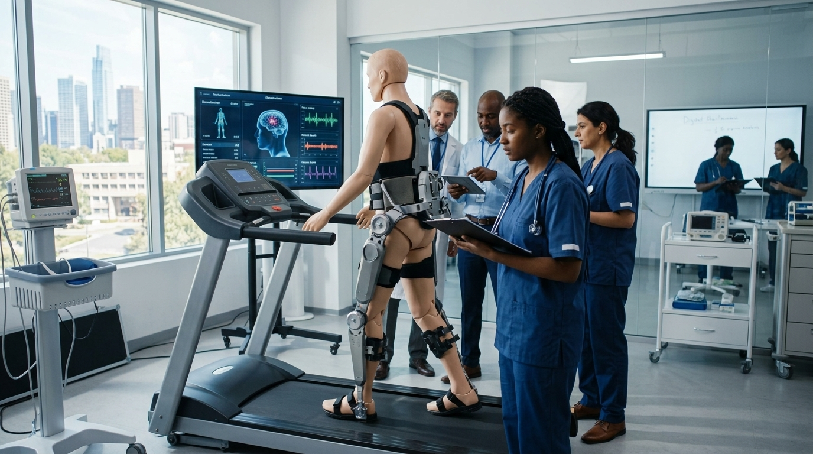
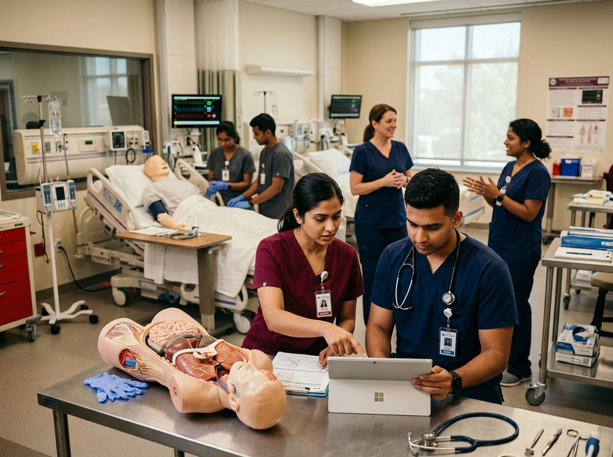
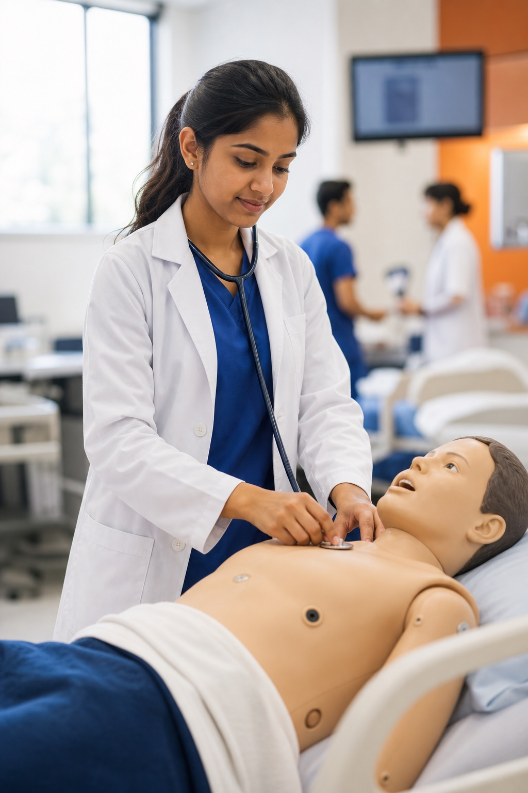
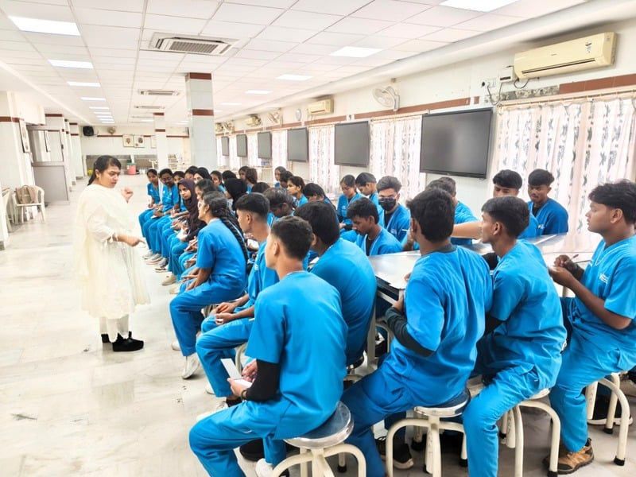

Choose Your Degree
Choose from 12 healthcare programs tied to real career outcomes.
A clearer path from degree to career
Carebridge connects a real healthcare degree, live clinical exposure and career readiness for students building careers in India or abroad.
Your journey
Choose from 12 healthcare programs tied to real career outcomes.
Build academic strength with hands-on and clinical learning early on.
Get licensing guidance and destination preparation during the degree.
Step into roles in India or abroad with more clarity and support.
The Global Need
Students are choosing access to shortage-driven healthcare careers in India and abroad.
One connected system with licensing readiness built into the degree.
See how licensing and placement are built in →The global shortage already exceeds 11 million healthcare workers, so destination readiness matters early.
Public and private employers keep hiring therapy, rehab and nursing talent.
Hospitals and aged-care systems keep demand high for clinically ready graduates.
DHA, DOH and MOH-linked systems move faster for candidates ready with licensing and documents.
These markets reward early planning, exam discipline and documentation readiness.
The 3 Unbroken Pillars
International-standard learning inside a 120-acre medical campus with live patient rotations from Year 1.
IELTS / OET and licensing exam prep built directly into university semesters.
Foreign hospital interviews, visa support, credential verification and post-arrival assistance.
Career-Ready Learning in India
Build a strong base in India while learning to the standards global healthcare systems expect.
Degree choice
Choose from 12 allied and rehabilitation programs with clear career pathways.
Clinical exposure
Students build clinical confidence early through a live-care campus environment.
Integrated preparation
Licensing, language and destination preparation are integrated into the degree, not left until graduation.
Graduate outcomes
Graduate prepared for work in India, global pathways, higher studies or long-term growth.
How Carebridge Works
Earn the degree, build readiness during study, then move toward career pathways with structured support.
Explore the complete pathway →International-standard teaching inside a live care ecosystem, including simulation, clinical English and ward behaviour from Year 1.
Language, licensing and national plus international certifications are taught across the degree, not added at the end.
Foreign-hospital interviews, visa and licensing support, placement and post-placement care through a separately licensed recruitment entity.
Flagship Programs
Preview some of the programs students can choose from.
Your Career. Your Choice.
A 120-acre rehabilitation-focused university near Ramoji Film City, Hyderabad, where learning and clinical exposure happen on one campus.

Surrounded by nature with academic blocks, labs, sports grounds and separate hostels.

Direct access to inpatient wards, child therapy centers and Year 1 clinical rotations.
The Complete Pathway
Students graduate with multiple credible next steps, not one forced outcome.
Placement assistance for eligible, career-ready students.
Entrepreneurship support where professionally permitted.
International career support, licensing preparation and destination guidance.
Career mapping, advanced skills, certifications and higher-study guidance.
Career Readiness System
Three connected parts shape the journey.

Explore strong academics.
Explore strong academics →
Explore clinical training.
Explore clinical training →
Explore global career readiness.
Explore global career readiness →Frequently Asked Questions
A quick read on programs, recognition, clinical exposure, and international pathways.
Carebridge offers 12 undergraduate healthcare programs in Hyderabad, including Physiotherapy, Occupational Therapy, Nursing, Radiology, Laboratory Sciences, Emergency Care, Psychology, Audiology, Dialysis and more. Each pathway combines university academics, hands-on clinical exposure, and preparation for careers in India or abroad.
Yes. Programs are delivered at St. Mary's Rehabilitation University, established under the Telangana State Private Universities Act, 2018 and approved by the Government of Telangana. The university aligns with UGC norms and relevant statutory councils including NCAHP, INC, and RCI where applicable.
Students learn on a 120-acre integrated campus near Hyderabad with access to clinical environments, labs, and guided practical exposure. Admissions for 2026-27 are based on 10+2 eligibility, typically with PCB or PCMB depending on the program, and counselling is available at 040 45307444.